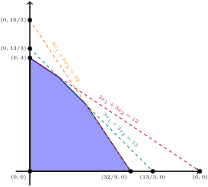

Skip to main content
Contents Index Calc Dark Mode Prev Up Next \(\newcommand{\N}{\mathbb N} \newcommand{\Z}{\mathbb Z} \newcommand{\Q}{\mathbb Q} \newcommand{\R}{\mathbb R}
\newcommand{\mc}[1]{\multicolumn{1}{c}{#1}}
\DeclareMathOperator{\cone}{cone} \newcommand{\x}{\mathbf x} \newcommand{\y}{\mathbf y} \newcommand{\z}{\mathbf z}
\newcommand{\vc}{\mathbf c} \newcommand{\vb}{\mathbf b}
\newcommand{\vs}{\mathbf s} \newcommand{\vt}{\mathbf t} \newcommand{\p}{\mathbf p} \newcommand{\q}{\mathbf q}
\newcommand{\ec}[1]{\enclose{circle}{#1}} \DeclareMathOperator{\lcm}{lcm} \newcommand{\eb}[1]{\enclose{box}{#1}}
\newcommand{\lt}{<}
\newcommand{\gt}{>}
\newcommand{\amp}{&}
\definecolor{fillinmathshade}{gray}{0.9}
\newcommand{\fillinmath}[1]{\mathchoice{\colorbox{fillinmathshade}{$\displaystyle \phantom{\,#1\,}$}}{\colorbox{fillinmathshade}{$\textstyle \phantom{\,#1\,}$}}{\colorbox{fillinmathshade}{$\scriptstyle \phantom{\,#1\,}$}}{\colorbox{fillinmathshade}{$\scriptscriptstyle\phantom{\,#1\,}$}}}
\)
Section 2.2 The Simplex Algorithm for Canonical Maximization
Having established the pivot in
Section 2.1 , we use geometry to determine where to pivot to find optimal solutions. We also discuss how to address potential obstacles.
Subsection 2.2.1 Basic Feasible Maximization
Activity 2.2.1 .
(a) Consider the following tableau:
\(x_1\) \(t_2\) \(t_1\) \(x_4\) \(-1\)
\(2\) \(4\) \(6\) \(5\) \(3\) \(=-x_3\)
\(-3\) \(0\) \(\frac{2}{3}\) \(-2\) \(-1\) \(=-x_2\)
\(\frac{17}{4}\) \(-1\) \(4\) \(\frac{2}{3}\) \(-2\) \(=-t_3\)
\(5\) \(-1\) \(0\) \(3\) \(-244\) \(=f\)
Note that
\(x_1, t_2, t_1, x_4=0\) for the basic solution of this tableau. Write out the corresponding system of canonical inequalities. Are they all satisfied?
(b) Which of the following is a necessary and sufficient condition for a Tucker tableau to have a feasible basic solution?
Some of the
\(c_j\leq 0\text{.}\)
All of the
\(c_j\leq 0\text{.}\)
Some of the
\(c_j\geq 0\text{.}\)
All of the
\(c_j\geq 0\text{.}\)
Some of the
\(b_i\leq 0\text{.}\)
All of the
\(b_i\leq 0\text{.}\)
Some of the
\(b_i\geq 0\text{.}\)
All of the
\(b_i\geq 0\text{.}\)
Activity 2.2.2 .
Consider the following tableau:
\(x_3\) \(t_3\) \(x_2\) \(t_1\) \(-1\)
\(-4\) \(25\) \(-3\) \(2\) \(18\) \(=-t_2\)
\(-1\) \(2\) \(2\) \(-1\) \(22\) \(=-x_1\)
\(-2\) \(0\) \(-1\) \(-1\) \(10\) \(=-x_4\)
\(2\) \(0\) \(-1\) \(1\) \(-156\) \(=f\)
Note that this tableau records a basic solution where
\(x_3, t_3, x_2, t_1=0\text{.}\)
(a) Why is the basic solution feasible?
(b) Which of the following
\(x_3, t_3, t_1, x_2\) could we increase from zero to increase our objective function value?
(c) If we increase
\(t_1\) to 5, are all our inequalities satisfied? What about 10? 100?
(d) If we increase
\(x_3\) to 5, are all our inequalities satisfied? What about 10? 100?
(e) What is the largest value we could increase
\(t_1\) while satisfying our 3 inequalities? What about
\(x_3\text{?}\)
(f) Find a sufficient condition for a feasible tableau for a canonical maximization problem to have an unbounded feasible region.
All of the
\(a_{ij}\leq 0\text{.}\)
There is a row
\(i\) so that all of the
\(a_{ij}\leq 0\) in that row.
There is a column
\(j\) so that all of the
\(a_{ij}\leq 0\) in that column.
All of the
\(c_j\leq 0\text{.}\)
All of the
\(b_i\leq 0\text{.}\)
Activity 2.2.3 .
So we have found a reasonable condition for a canonical maximization problem to have unbounded feasible region. We now consider objective functions.
(a) Before reading ahead, discuss whether or not the statements “a canonical maximization problem has unbounded feasible region” and “a canonical maximization problem has unbounded objective function” are logically equivalent. If they are, why? If not, does one imply the other, or can each statement hold while the other statement is false?
(b) Consider the following tableau:
\(x_1\) \(x_2\) \(-1\)
\(-2\) \(1\) \(12\) \(=-t_1\)
\(-3\) \(4\) \(10\) \(=-t_2\)
\(-4\) \(1\) \(0\) \(=f\)
Our previous discussion leads us to believe that
\(x_1\) may be increased as much as we please, and our two inequalities will remain satisfied. Yet consider a sketch of the region and function:
It turns out this system still achieves a maximum solution. Why does this not contradict our previous work?
(c) Which of the following is a reasonable sufficient condition for a feasible tableau for a canonical maximization problem to have an unbounded objective function.
All of the
\(a_{ij}\leq 0\text{.}\)
There is a row
\(i\) so that all of the
\(a_{ij}\leq 0\) in that row and
\(b_i>0\text{.}\)
There is a row
\(i\) so that all of the
\(a_{ij}\leq 0\) in that row and
\(b_i \lt 0\text{.}\)
There is a column
\(j\) so that all of the
\(a_{ij}\leq 0\) in that column and
\(c_j>0\text{.}\)
There is a column
\(j\) so that all of the
\(a_{ij}\leq 0\) in that column and
\(c_j\lt 0\text{.}\)
Activity 2.2.4 .
Consider the canonical maximization problem and basic solution encoded by the following tableau:
\(x_1\) \(x_2\) \(-1\)
\(3\) \(3\) \(13\) \(=-t_1\)
\(2\) \(3\) \(12\)
\(=-t_2\)
\(9\) \(6\) \(32\) \(=-t_3\)
\(7\) \(8\) \(32\) \(=f\)
(a) Let’s say we wanted to increase
\(x_2\) from 0. What is the largest we could increase
\(x_2\) to while satisfying all 3 inequalities?
(b) Consider a sketch of our feasible region:

We could choose to pivot
\(x_2\) with either
\(t_1, t_2, t_3\text{.}\) Only one of these would result in a feasible solution. Looking graphically, which is it?
(c) What’s the connection between the two above tasks?
(d) For a canonical linear problem and basic solution encoded by a Tucker tableau:
\(x_1\) \(x_2\) \(\cdots\) \(x_m\) \(-1\)
\(a_{11}\) \(a_{12}\) \(\cdots\) \(a_{1m}\) \(b_1\) \(=-t_1\)
\(a_{21}\) \(a_{22}\) \(\cdots\) \(a_{2m}\) \(b_2\) \(=-t_2\)
\(\vdots\) \(\vdots\) \(\ddots\) \(\vdots\) \(\vdots\) \(\vdots\)
\(a_{n1}\) \(a_{n2}\) \(\cdots\) \(a_{nm}\) \(b_n\) \(=-t_n\)
\(c_1\) \(c_2\) \(\cdots\) \(c_m\) \(d\)
If we pivot in column
\(j\text{,}\) which row
\(i\) should we choose?
Any
\(i\) as long as
\(a_{ij}>0\text{.}\)
The row
\(i\) where
\(\frac{b_i}{a_{ij}}\) is minimized.
The row
\(i\) where
\(\frac{c_j}{a_{ij}}\) is minimized.
The row
\(i\) where
\(\frac{b_i}{a_{ij}}\) is minimized of of the rows where
\(a_{ij}>0\text{.}\)
The row
\(i\) where
\(\frac{c_j}{a_{ij}}\) is minimized of of the rows where
\(a_{ij}>0\text{.}\)
(e) Based on the observations above, what should be the pivot entry for the following tableau?
\(x_1\) \(x_2\) \(-1\)
\(3\) \(4\) \(10\) \(=-t_1\)
\(-4\) \(3\) \(8\) \(=-t_2\)
\(2\) \(1\) \(5\) \(=-t_3\)
\(3\) \(-2\) \(0\) \(=f\)
Activity 2.2.5 .
For each of the following tableaus, determine which, if any, of the following are true:
The tableau records an infeasible basic solution.
The tableau records a basic optimal solution.
The tableau tells us the feasible region is unbounded.
The tableau tells us the objective function is unbounded.
If a tableau is feasible but not optimal, determine the legit pivot points.
(a)
\(?\) \(?\) \(?\) \(-1\)
\(1\) \(1\) \(4\) \(4\) \(=-?\)
\(2\) \(2\) \(3\) \(-1\) \(=-?\)
\(1\) \(4\) \(1\) \(3\) \(=-?\)
\(1\) \(-2\) \(2\) \(-5\) \(=f\)
(b)
\(?\) \(?\) \(?\) \(-1\)
\(-3\) \(1\) \(0\) \(5\) \(=-?\)
\(5\) \(-3\) \(8\) \(4\) \(=-?\)
\(2\) \(4\) \(2\) \(2\) \(=-?\)
\(-2\) \(3\) \(0\) \(2\) \(=f\)
(c)
\(?\) \(?\) \(?\) \(-1\)
\(3\) \(4\) \(-1\) \(2\) \(=-?\)
\(6\) \(-3\) \(2\) \(1\) \(=-?\)
\(4\) \(-2\) \(0\) \(3\) \(=-?\)
\(-4\) \(-2\) \(0\) \(17\) \(=f\)
(d)
\(?\) \(?\) \(?\) \(-1\)
\(-4\) \(3\) \(-2\) \(2\) \(=-?\)
\(0\) \(-1\) \(4\) \(0\) \(=-?\)
\(-1\) \(4\) \(0\) \(5\) \(=-?\)
\(-2\) \(3\) \(2\) \(-34\) \(=f\)
(e)
\(?\) \(?\) \(?\) \(-1\)
\(1\) \(-1\) \(0\) \(-2\) \(=-?\)
\(-1\) \(-3\) \(8\) \(4\) \(=-?\)
\(3\) \(1\) \(2\) \(2\) \(=-?\)
\(-2\) \(-3\) \(-5\) \(9\) \(=f\)
(f)
\(?\) \(?\) \(?\) \(-1\)
\(3\) \(-2\) \(6\) \(3\) \(=-?\)
\(4\) \(-3\) \(-3\) \(0\) \(=-?\)
\(-1\) \(2\) \(5\) \(1\) \(=-?\)
\(-1\) \(-4\) \(-2\) \(-54\) \(=f\)
(g)
\(?\) \(?\) \(?\) \(-1\)
\(0\) \(1\) \(0\) \(4\) \(=-?\)
\(2\) \(2\) \(8\) \(6\) \(=-?\)
\(2\) \(0\) \(3\) \(3\) \(=-?\)
\(5\) \(3\) \(-4\) \(-23\) \(=f\)
With all this, we finally may define our
Simplex Algorithm for Maximum Basic Feasible Tableaus .
Definition 2.2.6 .
The Simplex Algorithm for Maximum Basic Feasible Tableaus
Ensure that each \(b_i\geq 0\text{,}\) that is that the solution is feasible.
IF every \(c_j\leq 0\text{:}\) STOP since the current solution is optimal.
PICK a column \(j\) such that \(c_j > 0\text{.}\)
IF each \(a_{1j}, a_{2j}, \ldots, a_{mj}\leq 0 \text{:}\) STOP since the objective function is unbounded.
PICK a row \(i\) that minimizes \(\left\{ b_i/a_{ij}: a_{ij} > 0 \right\}\text{.}\)
PIVOT on \(a_{ij}\text{.}\)
GOTO 1.
Activity 2.2.7 .
Recall the canonical tableau:
\(x_1\) \(x_2\) \(\cdots\) \(x_m\) \(-1\)
\(a_{11}\) \(a_{12}\) \(\cdots\) \(a_{1m}\) \(b_1\) \(=-t_1\)
\(a_{21}\) \(a_{22}\) \(\cdots\) \(a_{2m}\) \(b_2\) \(=-t_2\)
\(\vdots\) \(\vdots\) \(\ddots\) \(\vdots\) \(\vdots\) \(\vdots\)
\(a_{n1}\) \(a_{n2}\) \(\cdots\) \(a_{nm}\) \(b_n\) \(=-t_n\)
\(c_1\) \(c_2\) \(\cdots\) \(c_m\) \(d\) \(=f\)
Suppose that the basic solution encoded by the tableau were feasible, and that after pivoting on
\(a_{ij}\) according to
Definition 2.2.6 we had that
\(d\to d'\text{.}\) Show that
\(d'\leq d\text{.}\)
Activity 2.2.8 .
(a)
\(x_1\) \(x_2\) \(-1\)
\(2\) \(1\) \(8\) \(=-t_1\)
\(1\) \(2\) \(10\) \(=-t_2\)
\(30\) \(50\) \(0\) \(=f\)
(b)
\(x_1\) \(x_2\) \(-1\)
\(-1\) \(1\) \(1\) \(=-t_1\)
\(1\) \(-1\) \(3\) \(=-t_2\)
\(1\) \(2\) \(0\) \(=f\)
(c)
\(x_1\) \(x_2\) \(x_3\) \(x_4\) \(-1\)
\(1\) \(1\) \(1\) \(0\) \(1\) \(=-t_1\)
\(0\) \(1\) \(1\) \(0\) \(4\) \(=-t_2\)
\(-1\) \(0\) \(-1\) \(1\) \(1\) \(=-t_3\)
\(-1\) \(-1\) \(1\) \(1\) \(0\)
Subsection 2.2.2 Basic Infeasible Maximization
Activity 2.2.9 .
Each of the following tableaus records the origin as a basic solution, which is not feasible. Determine geometrically which of these tableau record a problem which has an optimal solution. Then answer the follow-up questions.
(a)
\(x_1\) \(x_2\) \(-1\)
\(-2\) \(-1\) \(-1\) \(=-t_1\)
\(1\) \(5\) \(15\) \(=-t_2\)
\(2\) \(3\) \(18\) \(=-t_3\)
\(3\) \(5\) \(0\) \(=f\)
(b)
\(x_1\) \(x_2\) \(-1\)
\(-2\) \(3\) \(1\) \(=-t_1\)
\(2\) \(-6\) \(-5\) \(=-t_2\)
\(5\) \(1\) \(7\) \(=-t_3\)
\(5\) \(1\) \(0\) \(=f\)
(c) For the one problem where the origin is not feasible, but the problem has an optimal solution, what pivot would result in a feasible solution?
(d) If
\(b_{i^*}\lt 0\text{,}\) what should be true about
\(a_{ij^*}\) so that
\(b_{i^*}\) is positive afterwards?
(e) Consider the inequality
\(2x_1-3x_2-4x_3\leq -5\text{.}\) Is there a solution which satisfies this where each
\(x_i\geq 0\text{?}\)
(f) Consider the inequality
\(5x_1+x_2+2x_3\leq -10\text{.}\) Is there a solution which satisfies this where each
\(x_i\geq 0\text{?}\)
Activity 2.2.10 .
We now want to concoct a scheme to turn all the
\(b_i\) nonnegative, if possible.
Consider the following tableau:
\(?\) \(?\) \(?\) \(-1\)
\(a_{11}\) \(a_{12}\) \(a_{13}\) \(b_1\) \(=-?\)
\(a_{21}\) \(a_{22}\) \(a_{23}\) \(b_2\) \(=-?\)
\(a_{31}\) \(a_{32}\) \(a_{33}\) \(b_3\) \(=-?\)
\(a_{41}\) \(a_{42}\) \(a_{43}\) \(b_4\) \(=-?\)
\(c_1\) \(c_2\) \(c_3\) \(0\) \(=f\)
Suppose that
\(b_2\lt 0, b_3, b_4>0\text{.}\) We want to turn
\(b_2\) positive while making sure
\(b_3, b_4\) stay positive.
(a) Suppose each
\(a_{2j}\geq 0\text{,}\) what can we say about the associated problem?
(b) Let’s then say
\(a_{22}\lt 0\text{.}\) If we pivot on
\(a_{22}\) do
\(b_2, b_3, b_4\) increase or decrease? Are any now guaranteed to be positive or negative?
(c) Let’s then say
\(a_{32} > 0\text{.}\) If we pivot on
\(a_{32}\) do
\(b_2, b_3, b_4\) increase or decrease? Are any now guaranteed to be positive or negative?
(d) Let’s then say
\(a_{42} \lt 0\text{.}\) If we pivot on
\(a_{42}\) do
\(b_2, b_3, b_4\) increase or decrease? Are any now guaranteed to be positive or negative?
(e)
Any
\(a_{2k}\text{,}\) where
\(k\geq 2\text{.}\)
All of the
\(a_{2k}, k\geq 2\) such that
\(b_k/a_{2k}\) is minimized.
All of the
\(a_{2k}, k\geq 2\) such that if
\(k>2\) then
\(a_{2k}>0\) and
\(b_k/a_{2k}\) is minimized.
(f) Note that we have no idea if
\(b_1\) is positive or negative before we started, much less after. Why don’t we care?
With this, we may define our algorithm for potential nonfeasible tableau.
Definition 2.2.11 .
The Simplex Algorithm for Maximum Tableaus
IF each \(b_i\geq 0\text{,}\) GOTO 8.
PICK the largest \(i\) such that \(b_i\lt 0\text{.}\)
IF \(a_{i1}, a_{i2}, \ldots, a_{in}\geq 0 \text{:}\) STOP since the problem in infeasible.
PICK a column \(j\) such that \(a_{ij} \lt 0\) .
PICK a row \(p\geq i\) so that \(\displaystyle \min_{k>i}\left(\{b_i/a_{ij}\} \cup \{b_k/a_{kj}:a_{kj}>0\} \right)=b_p/a_{pj}\text{.}\)
PIVOT on \(a_{pj}\text{.}\)
GOTO 1.
Activity 2.2.12 .
(a)
\(?\) \(?\) \(-1\)
\(-1\) \(-2\) \(-3\) \(=-?\)
\(1\) \(1\) \(2\) \(=-?\)
\(2\) \(-4\) \(0\) \(=f\)
(b)
\(?\) \(?\) \(-1\)
\(-3\) \(-2\) \(-1\) \(=-?\)
\(3\) \(5\) \(20\) \(=-?\)
\(2\) \(0\) \(4\) \(=-?\)
\(3\) \(4\) \(0\) \(=f\)
Subsection 2.2.3 The Simplex Algorithm for Canonical Minimization
Definition 2.2.13 .
Consider a canonical minimization problem:
\begin{align*}
\textbf{Minimize: } g(\mathbf{x}) = c_1x_1 + c_2x_2 +\cdots c_nx_n-d \amp= \left(\displaystyle\sum_{j=1}^n c_jx_j \right)-d\\
\textbf{subject to: } a_{11}x_1 + a_{12}x_2 +\cdots a_{1n}x_n\amp \geq b_1\\
a_{21}x_1 + a_{22}x_2 +\cdots a_{2n}x_n\amp \geq b_2\\
\vdots \amp \vdots\\
a_{m1}x_1 + a_{m2}x_2 +\cdots a_{mn}x_n\amp \geq b_m\\
x_1, x_2, \ldots, x_n\amp \geq 0
\end{align*}
where \(a_{ij}, b_i, c_j, d\in \mathbb{R}\text{.}\)
This problem may be recorded in the following tableau:
\(x_1\) \(a_{11}\) \(a_{12}\) \(\cdots\) \(a_{1m}\) \(c_1\)
\(x_2\) \(a_{21}\) \(a_{22}\) \(\cdots\) \(a_{2m}\) \(c_2\)
\(\vdots\) \(\vdots\) \(\vdots\) \(\ddots\) \(\vdots\) \(\vdots\)
\(x_n\) \(a_{n1}\) \(a_{n2}\) \(\cdots\) \(a_{nm}\) \(c_n\)
\(-1\) \(b_1\) \(b_2\) \(\cdots\) \(b_m\) \(d\)
\(=t_1\) \(=t_2\) \(\cdots\) \(=t_m\) \(=g\)
The
negative transpose of this tableau is:
\(x_1\) \(x_2\) \(\cdots\) \(x_n\) \(-1\)
\(-a_{11}\) \(-a_{21}\) \(\cdots\) \(-a_{n1}\) \(-b_1\) \(=-t_1\)
\(-a_{12}\) \(-a_{22}\) \(\cdots\) \(-a_{n2}\) \(-b_2\) \(=-t_2\)
\(\vdots\) \(\vdots\) \(\ddots\) \(\vdots\) \(\vdots\) \(\vdots\)
\(-a_{1m}\) \(-a_{2m}\) \(\cdots\) \(-a_{nm}\) \(-b_n\) \(=-t_n\)
\(-c_1\) \(-c_2\) \(\cdots\) \(-c_m\) \(-d\)
Activity 2.2.14 .
(a) Show that this negative transpose of a canonical minimization tableau encodes a problem that has the same feasible region and optimal solution as the original minimization problem.
(b) (c)